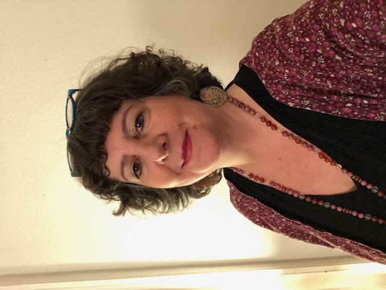

Qui suis-je ?
Superviseuse ARS, coach certifiée, formée à la direction d’institutions psychosociales, formée à la systémique et aux techniques de l’Arbre de vie et du Chemin de vie professionnel
Lucia Tenore

Dans les racines de mon arbre de vie on trouve les oliviers d’Italie, l’amour de la famille, l’émigration et le déracinement que mes parents ont vécu en s’installant définitivement en Suisse . On y trouve également le soleil, les vallées et les rivières de mon adoré Tessin où j’ai grandi jusqu’à 20 ans. Les études m’ont fait voyager à mon tour jusqu’à Lausanne où j’ai posé mes valises en 1989.
Aujourd’hui, riche d’une longue expérience dans le monde du travail social, ce qui m’anime et me passionne sont l’importance de la création du lien avec l’autre, l’attention portée à l’accompagnement des personnes et des équipes en faisant
émerger leur potentiel. J’aime mettre à l’honneur forces et compétences en m’appuyant sur les réussites, plutôt que revisiter les échecs, en enclenchant ainsi un cercle vertueux. J’aime écouter et créer un environnement bienveillant
et créatif où chacun peut trouver sa place et évoluer. Avec ce site j’aime allier ma passion pour la nature et les arbres en particulier et celui de mes activités:
Supervision, Formation,
Accompagnement des équipes.
Dans les racines de mon arbre on trouve les oliviers d’Italie, l’amour de la famille, l’émigration et le déracinement que mes parents ont vécu en s’installant définitivement en Suisse . On y trouve également le soleil, les vallées et les rivières de mon adoré Tessin où j’ai grandi jusqu’à 20 ans. Les études m’ont fait voyager à mon tour jusqu’à Lausanne où j’ai posé mes valises en 1989.
Aujourd’hui, riche d’une longue expérience dans le monde du travail social, ce qui m’anime et me passionne sont l’importance de la création du lien avec l’autre, l’attention portée à l’accompagnement des personnes et des équipes en faisant
émerger leur potentiel. J’aime mettre à l’honneur forces et compétences en m’appuyant sur les réussites, plutôt que revisiter les échecs, en enclenchant ainsi un cercle vertueux. J’aime écouter et créer un environnement bienveillant et
créatif où chacun peut trouver sa place et évoluer. Avec ce site j’aime allier ma passion pour la nature et les arbres en particulier et celui de mes activités:
Supervision, Formation,
Accompagnement des équipes.
MES VALEURS
Co-construire
Prendre soin du lien
Recherche de sens
Respect des différences
Mon Expérience Professionnelle
- Educatrice de l’enfance pendant 15 ans
- Directrice d’institution pendant 15 ans
- Superviseure depuis 18 ans
- Formatrice au CREDE
- Chargée de cours à l’ESEDE en analyse de la pratique professionnelle
- Experte externe pour les travaux de diplômes de l’ESEDE
- Experte aux examens des apprentis ASE
- Accueillante en maison verte (accueil parents-enfants)
Mes Compétences
Ecoute active
Équité
Autonomie
Endurance
Créativité
Détermination
Sensibilité
Flexibilité
Mes Competences
- Ecoute active
- Regard circulaire
- Équité
- Autonomie
- Endurance
- Créativité
- Détermination
- Sensibilité
- Flexibilité